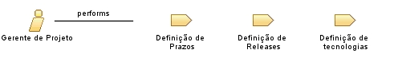

| Role: Gerente de Projeto |
 |
|
 |
||
| Primary Performs | ||
|---|---|---|
| Additionally Performs | ||
Este papel é responsável principalmente pelas seguintes tarefas:
|
| Skills | Uma pessoa que execute este papel necessita das seguintes habilidades:
|
|---|---|
| Assignment Approaches | Este papel é normalmente executado por um grupo pequeno de pessoas (Sugere-se três integrantes) que farão a divisão entre si de cada responsabilidade deste papel. É interessante que haja uma rotação de responsabilidades entre este grupo a cada release ou atividade para reduzir a monopolização do poder durante o desenvolvimento do sistema. |